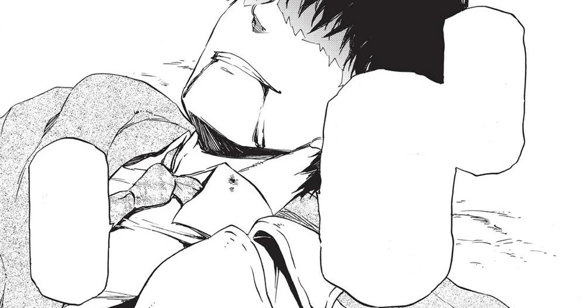

Once Upon a Page
Once Upon a Page

That Time I Got Reincarnated as a Slime
A man who dies in an accident is reborn as a slime in another world and slowly builds a nation of monsters.
Death and Reincarnation

It was just your typical kind of life. I graduated from college, landed a job at a sort-of-big general contractor outfit, and with my older brother taking care of our parents for me, I was currently enjoying all the myriad benefits of the bachelor-pad life. Age thirty-seven. No significant other.
I wasn’t exactly short or frumpy or hideous or anything. But when it came to the opposite sex, apparently I had nothing to offer. I’d made efforts along those lines, with varying degrees of dedication, but by the third rejection, something fizzled out within me. Besides—really, at this age, I was kinda past the point where a girlfriend needed to be my main focus. Work kept me busy enough. Plus, it wasn’t like I was gonna die without one.
…I’m not making excuses, all right? It’s just that I started thinking…
“Oh, hello, sir! Sorry we’re late!” There he was, walking toward me, bursting with all that youthful energy of his. He and the beautiful woman next to him. His name was Tamura, one of the guys who worked under me, and she was Sawatari, the front-desk lady and pretty much the “it” girl around the office. These bums asked to see me because they were getting married and wanted my advice. In other words, this meeting was the whole reason I was brooding over why I was such a failure at personal relationships. I was leaning against a telephone pole at the intersection where we’d agreed to meet after work, thinking to myself.
“Nah.” I nodded a greeting at Sawatari and asked,
“What’d you want to talk about?”
“Oh, good to meet you. My name’s Miho Sawatari. I’ve seen you at work a lot, but…um, I guess this is the first time I’ve spoken to you, huh? It makes me kind of nervous, somehow.” I’m the one who should be nervous, lady! my mind griped to itself. It’s not like I’m any good at speaking to women. How about a little sympathy here?
Any way you looked at it, I was the wrong person to ask. I knew nothing about love. They were doing this just to spite me—I was sure of it. Pretty sure, anyway.
“Oh, there’s nothing to be nervous about,” I replied. “Satoru Mikami. It’s good to meet you, Ms. Sawatari… although you’re famous enough around the office that you hardly need to even introduce yourself, huh? Tamura and I went to the same college, and we kinda hit it off during his training period, so that’s how we know each other.”
“Famous? Oof! Not famous in a weird way, I hope?”
“Oh, y’know. I hear stories about you dating Kameyama or messin’ around with Mr. Kihara in management…”
Somehow, I decided that picking on her would be a good idea. I just meant it as a passing joke, but it made Sawatari’s face turn a bright shade of red, her eyes watering up a bit. It was cute, in a way. People were always telling me to tone that stuff down— that I needed to consider people’s feelings more or, if not that, at least make it funnier—but I couldn’t help myself. So mark that down as another failure. Maybe I really do have a crap personality.
Tamura took that chance to intervene, giving Sawatari a pat on the shoulder. Dammit, Tamura! So blessed with the natural charm you need to live a decent life… I wish people like you would just explode!
“Aw, stop being mean to her,” he admonished with an effortless smile. “And don’t worry, Miho, he’s just having a little fun with you.”
Cool, refreshing, and completely guileless—Tamura was impossible to hate. He was still just twenty-eight, quite a bit younger than I was, but we got on well nonetheless. I probably owed him at least a few congratulations…
“Hah, sorry,” I said, figuring there was no reason to let my jealousy devour me. “I can’t help but needle people like that sometimes. But no point standing here on the sidewalk. Wanna get something to eat while we talk?”
“Aaaahhh!!” Screams. Chaos. What is—What’s going on?! “Move! I’ll kill you!!” I turned around to find a man sprinting toward me, a backpack in one hand and a kitchen knife in the other. I could hear shrieking. He was coming my way. With a knife. A knife? And at the other end of it… “Tamuraaaa!” The moment I shoved Tamura aside, I felt a burning pain run across my back. My body balled up as it collapsed to the ground, trying to withstand the shock. I couldn’t tell what had happened. I wanted to move, but I couldn’t. “Get the hell outta my way!” the man shouted as he ran off. I watched him go and then checked to see how my companions were. The suddenness of it all had reduced Tamura to a stupor, but he was unhurt. That was good. But, man, was my back burning. So hot. Beyond anything I’d describe as pain. What’s up with that? It’s too hot… Gimme a break.
Confirmed. Resist Heat…successfully acquired.
Did I… Did I just get stabbed? So I’m gonna die from a stabbing? Holy crap…
Confirmed. Resist Piercing Weapon…successfully acquired. Following up with Resist Melee Attack…
Successfully acquired.
“M-Mr. Mikami, you’re bleeding… You won’t stop bleeding!”
I really didn’t need to hear that right now. Was that Tamura? I thought I heard some kind of weird voice. If it was Tamura, then so be it.
I’m bleeding? Well, duh. I’m only human. If you stab me, I’ll probably bleed all over you, yes.
Damn, this was starting to hurt, though…
Confirmed. Cancel Pain…successfully acquired.
Um… Well, shit. All this pain and panic was starting to screw around with my consciousness.
“T-Tamura… Shut up. It… It’s nothing big, all right? Quit worrying…”
“Mr. Mikami, you’re… The blood…” Tamura tried to hold me up, face drained of color and looking about ready to break into sobs. So much for that bravado from two minutes ago. I tried to see how Sawatari was doing, but my vision was too fogged up to manage it.
Now the burning feeling on my back was starting to fizzle out. Instead, an intense, frigid cold was attacking me from head to toe. That… That’s probably bad… People die once they bleed too much, don’t they?
Confirmed. Constructing a blood-free body… Successful.
Hey, what’re you talking about? I can’t hear you too well…
I tried to speak. And failed. Shit. I think this might really be it… Like, the pain and the heat were pretty well gone by now. It was just cold.
Cold as hell. I felt as if I was gonna freeze in place. Who knew dying could keep you so damn busy?
Confirmed. Resist Cold…successfully acquired. Combined with the previously acquired Resist Heat, the skill has progressed to Resist Temperature.
Just then, what remained of my increasingly oxygen-deprived brain cells chanced upon a flash of brilliance.
Oh, craaaaap, the files on my hard drive! I summoned up my remaining wells of strength, striving to relay the final regret I had left in life. “Tamuraaa! If… If anything bad happens to me…take my computer, okay? Put it in the bathtub, turn it on, and just fry everything on the disk for me, man…”
Confirmed. Electricity-based deletion of data… Cannot execute. More information required. Substituting with Resist Electricity… Successfully acquired.
It took a moment for my plea to register with Tamura. He gave me a blank stare. Then he snickered.
“Ha-ha! That’s just like you, isn’t it?” Even if it was just a snicker, it beat having to depart this plane of existence with a grown man blubbering on top of me. I’d take it. “All I wanted was to show Sawatari off to you, too…,” he continued. “Pfft…” Hah. I knew it. That bastard. “It’s fine, okay? Make her a happy woman.” I wrung out the last bit of strength my body had to offer. “Just kill my PC for me…”
It was just your typical kind of life. I graduated from college, landed a job at a sort-of-big general contractor outfit, and with my older brother taking care of our parents for me, I was currently enjoying all the myriad benefits of the bachelor-pad life.
And I was a virgin. Imagine that. Floating off to meet my maker in completely unused condition… My manhood was probably crying its single eye out right then. Sorry I couldn’t make you a real grown-up. If there’s such a thing as reincarnation, I’m gonna go on the attack next time—I promise. I’ll hit up everyone I see, stalking my prey before I go in for the kill… Okay, not like that, but…
Confirmed. Unique skill “Predator”…successfully acquired.
I mean, here I was, lookin’ at forty without ever losing my virginity. Like an old sage meditating in the mountains. Another few years, and I probably could’ve been the great sage of celibacy. Not the road I wanted to take in life, but there you go.
Confirmed. Extra skill “Sage”…successfully acquired. Evolving extra skill “Sage” into unique skill “Great Sage”… Successful.
…Hey, someone mind telling me who’s talking? What do you mean, “unique skill ‘Great Sage’”? Someone tryin’ to start something with me? There’s nothing “unique” about that! If you think I’m finding that funny, I’m not! That’s just mean, man…
Before I could continue down that train of thought, however, I fell asleep.
Weird how death’s nowhere near as lonely as I thought it’d be.
That was the last thought I had on the mortal plane.